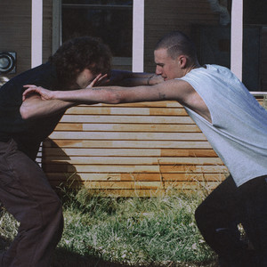

Malcolm Todd is currently one of my favorite artists as his music is a vibe
and also comes with subtle meanings that can really hit different at times.
Current Favorite Song:

Nemo - Malcolm Todd
Yorushika
Yorushika is a Japanese music duo known for poetic lyrics and atmospheric sound.
Their music really hits different for me and the melodies they perform just
affect me sooooo much, the electric guitar compositions in their music is
just *chefs kiss*